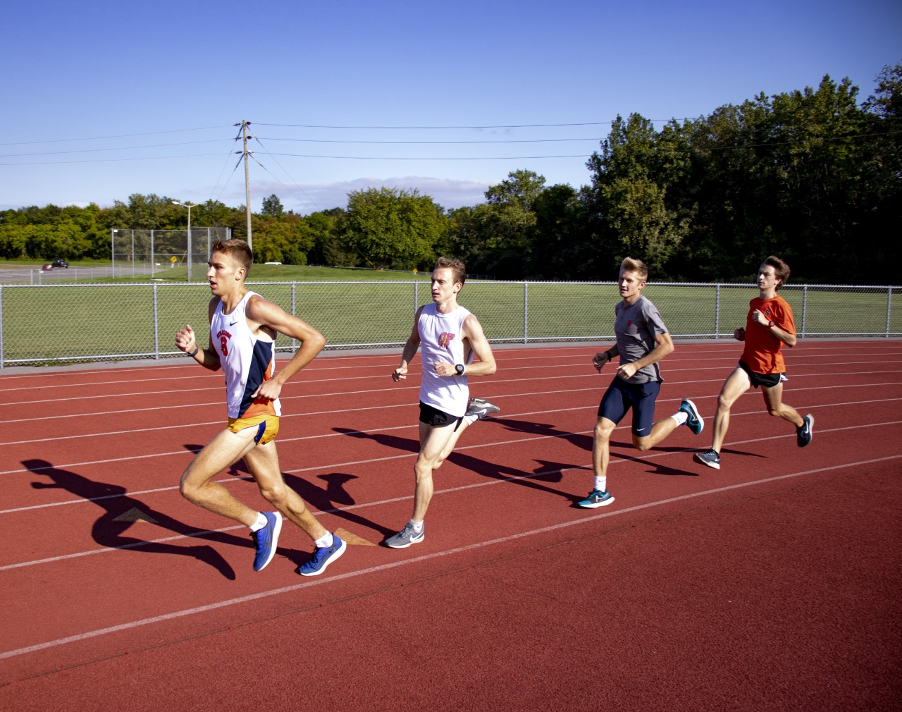
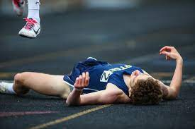

The idea for Alamo Running was sparked by the NCAA decision to let it's athletes use its Name, Image and Likeness to be able to run businesses and use their status as athletes to pursue their dreams in their sport. The ideas that we believe in stem from Otsego High School Cross Country and the many camps and sessions that we have attended with our high school coach Steve Long. These ideas and philosophies have translated and expanded over into our college careers and will shape Alamo Running into what it is. 
Alamo Running is a group that is not focused on the presence of social media and content creation, it is built off of the principles of all the work behind the scenes. Our training beliefs are built around the philosophies of the great aerobic workhorses. Some might consider tempo runs and long runs tedious and old school, but that is what separates the winners and losers in the last 1k of a race. Not the speed work, but the mentality of a hammer who has put the time in. Hard things are hard, there is no way to fake a distance race. The knowledge and mentalities that we have our something that we believe is essential to this sport, in a time where social media and content creation rules what is happening in our sport. The camps that we put on are designed to give high schoolers this and inspire them to be doing what they are doing for the right reasons. Not that you cannot create content or post on social media, but why us athletes should love the sport is the grind. The time spent with our teammates, the bonds we make, and the lessons that we learn are what we strive for in this sport and to be quite blunt, we do this to win. We don't care about the number of Instagram followers we have. Another main reason that this site and group was created was to spread information on the recruitment of athletes in high school by colleges.
Hunter and I both had very different experiences in the recruiting process, but both ended up at a division one university in Syracuse and Michigan State. While not everyone will be in this situation, there is a route to running at the next level above college for many high school athletes whether that be Division 2 or NAIA or Community College. Hunter and I have talked to many people about these processes and have gone through almost all these levels ourselves and our Night Seminars are designed for us to guide you and your parents through that process. This site and specifically this section of the site will be a place for weekly articles (blog style posts) to be shared straight from our athletes to you. These are not by any means professionally written pieces but are meant to be straight up dialogues with people interested in learning more or hearing our experiences. These could be anywhere from a journal by one of us on our thoughts from the week and what we have experienced, to something we have picked up from our coaches or support staffs that is related to running. This will be an excellent spot to see raw information from some of the most respected programs in the country. This is what Alamo Running is.